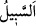

sizin iddiâ ettiğiniz gibi öz evlâdın hükümlerine tâbi olmaktan uzaktır.
Râğıb şöyle demiştir: “(Kur’an’da) Allah Teâlâ’nın sözü ağza nisbet ettiği her yerde
bu, o sözün yalan olduğuna işârettir. Ayrıca o sözün, kişinin inancına uymadığına dikkat
çekmek içindir.”
“Allah ise gerçeği” vâkıaya mutabık olan sözü “söyler” Çünkü hak ancak haktan
sâdır olur. Bu ise oğulluğun öz oğul olamayacağıdır “ve” başkasına değil, hak olan
“doğru yola O eriştirir.” Öyleyse siz, bu sözlerinizi bırakıp Allâh’ın bu sözünü alıp
kabul edin.
Yollar içerisinde “__WORD__ gidilmesi alışılmış ve kendisinde kolaylık olan yol demektir.
et-Te’vîlâtü’n-Necmiyye’de şöyle denilir: “Allah ise” her şeyi mânâsına karşılık
olarak isimlendirerek hakkı, “gerçeği söyler ve doğru yola O eriştirir.” Âdem (a.s.)’a
bütün isimleri öğretmekle yol gösterdiği ve bu ilmi mukarreb meleklere değil de ona
tahsis ettiği gibi her şeyin mânâsına uygun olan ismine yol gösterir.”
Büyüklerden birisi şöyle demiştir: “Bilesin ki şerîatın tüm edeplerinin hulâsası şudur:
Kul, cevher, araz, zaman, mekan, vaz etme, nisbet, hal, miktar, sayı, tesir eden ve edilen
kimse hakkında hüküm verirken haddini aşmamaktır.
Cevher konusundaki âdâb, kulun o konuda dînin hükmünü bilip o hükmü güzelce icra
etmesidir.
Kulun ârazlar konusunda edebi, farz, vâcib, haram, mübah, mekruh, mendub gibi
mükelleflerin fiilleri ile ilgili olan hususlardır.
Zaman konusundaki edebi, ancak vakitlerle irtibatlı olan ibâdetlerin vakitleriyle
ilgilidir. Her vaktin mükellefle ilgili bir hükmü vardır. Vakti dar olan vardır, vakti geniş
olan vardır.
Mekan, Allâh’ın evleri gibi ibâdet yerleri hakkındaki edebi ise onları insanlara nisbet
edilen evlerden yüksek yapmak ve oralarda Allâh’ın adını anmaktır.
Vaz etme konusunda kulun edebi, bir şeyin dindeki hükmünü değiştirmek için ismini
değiştirmek sûretiyle hiçbir şeyi isminden başkasıyla isimlendirmemek, böylece haram
kılınan bir şeyi helal, helal kılınan bir şeyi de haram yapmamaktır. Nitekim bir hadîste
şöyle buyrulmuştur: “Ümmetin üzerine bir zaman gelecek ki o zaman şarabı kendi
isminden başkasıyla isimlendiren insanlar ortaya çıkacak.”[159] Yâni onlar ismini
değiştirerek onun helal sayılmasının kapısını açmak için böyle yapacaklar.
İmam Mâlik (r.h.) bu hadîsi çok iyi anlamış, kendisine deniz hınzırının hükmü
sorulunca “Haramdır” demiştir. Kendisine: “O balık cümlesindendir, nasıl haram olur?”
denilince, İmam Mâlik “Siz onu ‘hınzır’ diye sordunuz, hınzır olduğu için haramlık
hükmü gerekli oldu” demiştir.” Aynı şekilde insanlar nebîz (şarap) ve bira diye şarabın
ismini değiştirerek helal saymışlar ve ‘haram olan şaraptır, nebîz (şarap) ve bira
değildir’ demişlerdir.
Nisbet ve izâfette edeb, Hızır (a.s.)’ın şu sözlerinde olduğu gibidir: “Onu (gemiyi)
kusurlu kılmak istedim.” (el-Kehf, 18/79) (Burada Hızır (a.s.) yerilecek şeyi